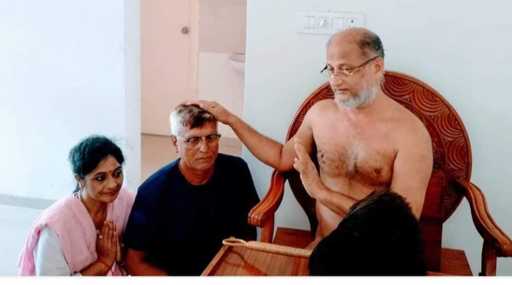
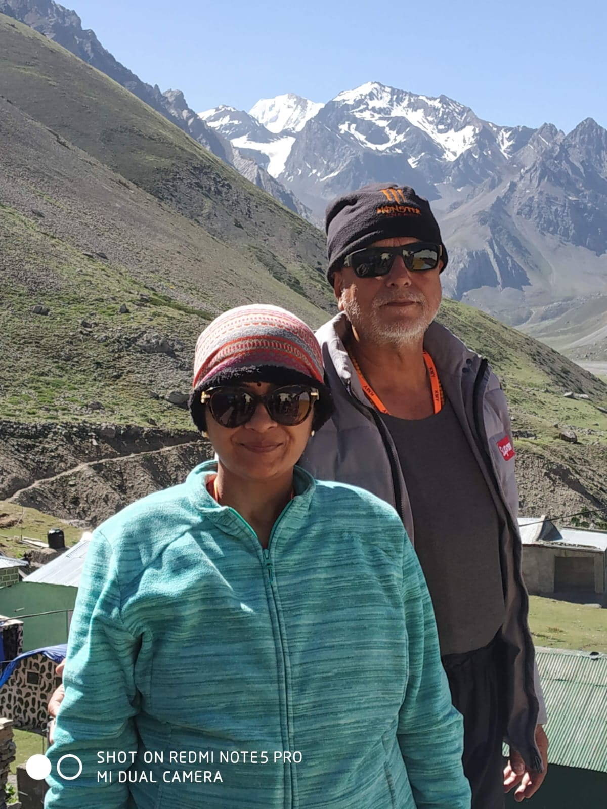
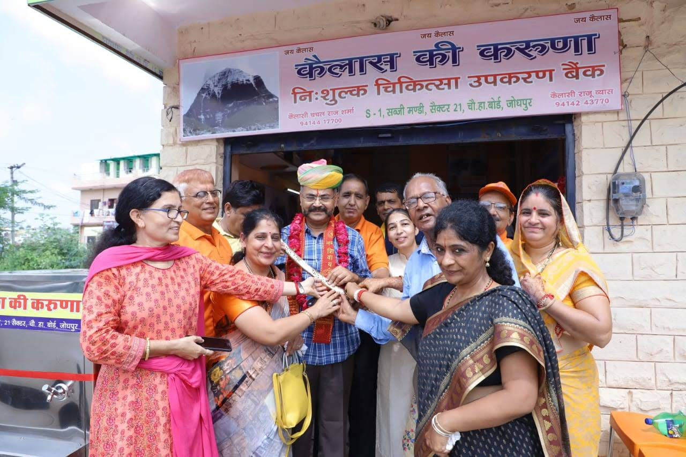
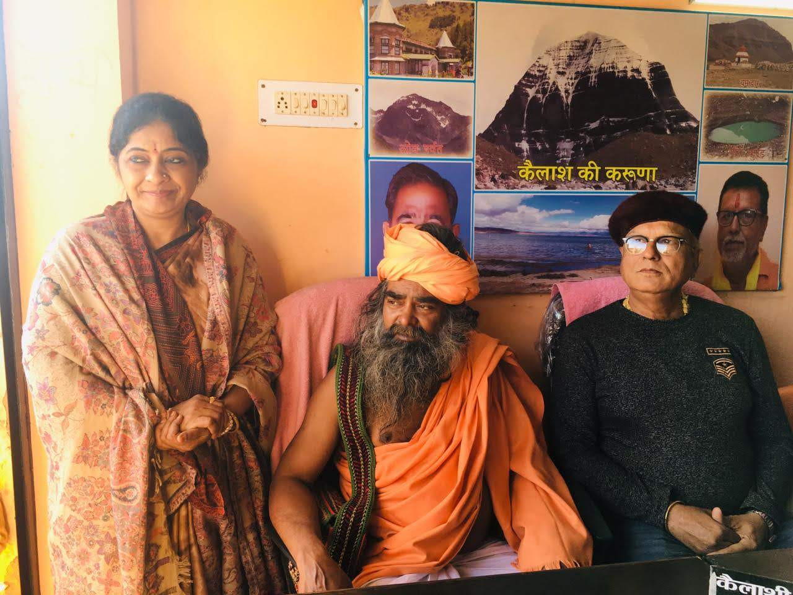
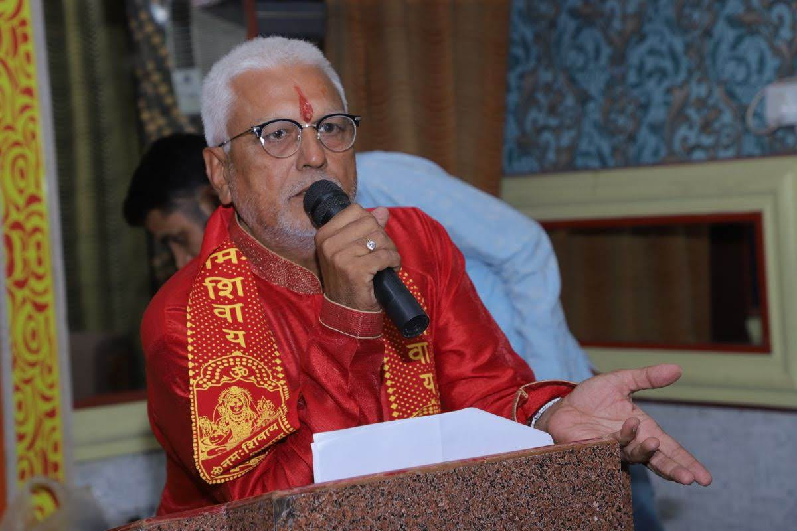
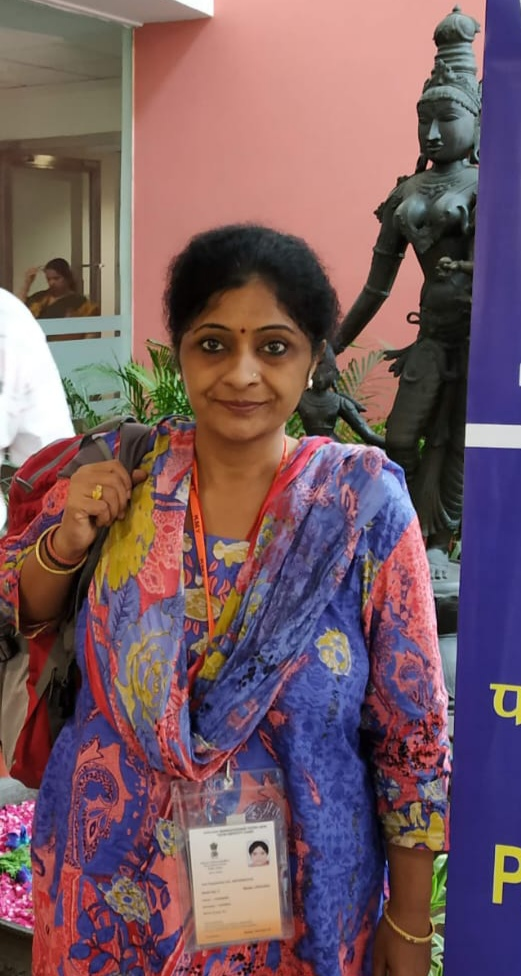

01
THE EARLY YEARS
Beginning with neighbourhood needs
Early efforts focused on local community challenges, including public cleanliness, seasonal health concerns and helping families find support during emergencies.
A JOURNEY OF FAITH, COMPASSION & SERVICE
The story of Kailash ki Karuna is a story of people who chose to turn compassion into practical support for their community.

Add a photograph of the founders or their service work
OUR GUIDING BELIEF
Kailash ki Karuna is a community service initiative built around personal commitment. The founders do not solicit public donations or religious subscriptions. Our focus is on making practical help accessible and treating every family with dignity.
THE BEGINNING
EVERY JOURNEY HAS A BEGINNING
The roots of this work grew in the neighbourhoods of Chopasni Housing Board, Jodhpur. The belief was simple: when someone around us faces difficulty, the community should try to stand beside them.
What began as local efforts to help people with practical community needs gradually developed into a more organised effort to support families during difficult times.
THE INSPIRATION
THE JOURNEY THAT INSPIRED THE NAME
In 2016, founder Raju Vyas undertook the Kailash Mansarovar Yatra. The experience left a deep impression on him and strengthened his desire to make compassion part of everyday action.
Alongside his wife, Chandra Harsh, he chose the name Kailash ki Karuna — the compassion of Kailash — to express the spirit behind their work: to serve people with humility, without discrimination and without seeking personal gain.
“Let faith find its expression through service.”

Add a photograph from the Kailash Mansarovar Yatra
OUR JOURNEY
Each chapter has been shaped by a need in the community and a willingness to step forward.
THE EARLY YEARS
Early efforts focused on local community challenges, including public cleanliness, seasonal health concerns and helping families find support during emergencies.
2016
Following the Kailash Mansarovar Yatra, Raju Vyas and Chandra Harsh committed themselves to building a service initiative inspired by compassion.
COMMUNITY HEALTH
During dengue outbreaks, the team undertook community fogging efforts in residential areas to support local mosquito-control initiatives.
COVID-19 PANDEMIC
During the COVID-19 crisis, a section of Surajdevi Roopa Devi Pushtikar Private School was converted into a local isolation and patient-support facility, with food and basic care arrangements.
CONTINUING THE WORK
The initiative grew into a medical equipment bank that helps families access essential home-care equipment when they need it.
OUR CENTRAL INITIATIVE
Medical equipment can be expensive, especially when a family needs it for a limited period during recovery. Our Nishulk Chikitsa Upkaran Bank helps families access essential equipment for home care.
Equipment is requested, availability and applicable conditions are explained, and the item is provided according to the organisation's process. After use, returned equipment can be prepared for the next family.
Explore available equipment
Photograph of the medical equipment bank

Add a photograph of equipment or service work
BEYOND THE MEDICAL EQUIPMENT BANK
Our work has also included initiatives that respond to everyday public needs.
Fogging efforts in residential areas during local dengue and mosquito-related health concerns.
Jalgrah initiatives that provide drinking water to people during the hot Rajasthan summer.
Practical assistance and coordination for families facing difficult situations.
THE PEOPLE BEHIND THE SEVA
The work of Kailash ki Karuna is shaped by the dedication of its founders, who balance their professional lives with a commitment to community service.

FOUNDER
A government school headmaster in Pratap Nagar, Jodhpur, Raju Vyas leads the initiative's field coordination, equipment procurement and service logistics beyond his professional responsibilities.

CO-FOUNDER
A Senior Grade-One Nurse at Umaid Hospital, Jodhpur, Chandra Harsh brings clinical experience to the initiative and contributes to equipment-care, sanitisation and medical operations.
WHAT GUIDES OUR WORK
Every family deserves to be treated with dignity, kindness and respect, without discrimination.
Availability, applicable deposits, usage and return conditions should be explained clearly.
Equipment should be used carefully, returned responsibly and prepared for future use.
Our purpose is to help people. Recognition is secondary to the work itself.
THE JOURNEY CONTINUES
Learn more about our services, explore the equipment available and contact our team for assistance.